解鎖方式

 卡片(學生證/服務證)-尚未完成初次設定 卡片(學生證/服務證)-無有效證件
卡片(學生證/服務證)-尚未完成初次設定 卡片(學生證/服務證)-無有效證件 門鎖樣式
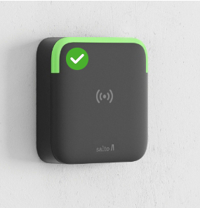
型1. 讀卡機式門鎖-含開卡功能 (左上角有綠圈圈圖示)
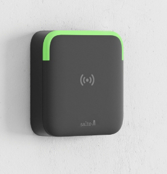
型2. 讀卡機式門鎖(一般式門鎖)
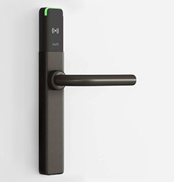
型3. 長型門鎖(一般式門鎖)
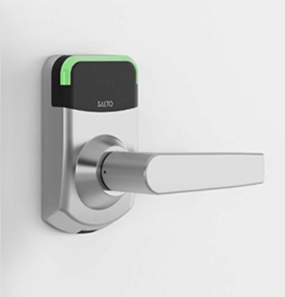
型4. 門把式門鎖(一般式門鎖)
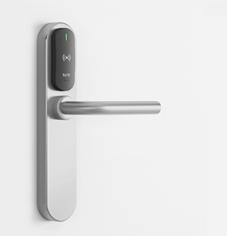
型5. 門把式門鎖(一般式門鎖)
使用說明
1. 感應門鎖-卡片初次設定(學生證/教職員證)
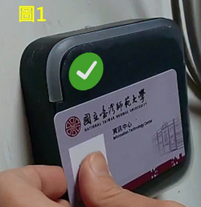
步驟1. 門鎖首次開卡，將學生證或教職員證靠近門鎖(如圖1)
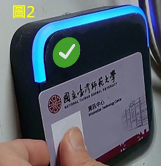
步驟2. 卡片設定時不要移開，門鎖會閃爍藍燈約8-10秒(如圖2)
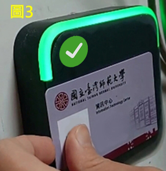
步驟3. 待卡片設定完成後，門鎖會閃爍綠燈嗶一聲(如圖3) ，表示卡片啟用完成。之後卡片即可開門解鎖。
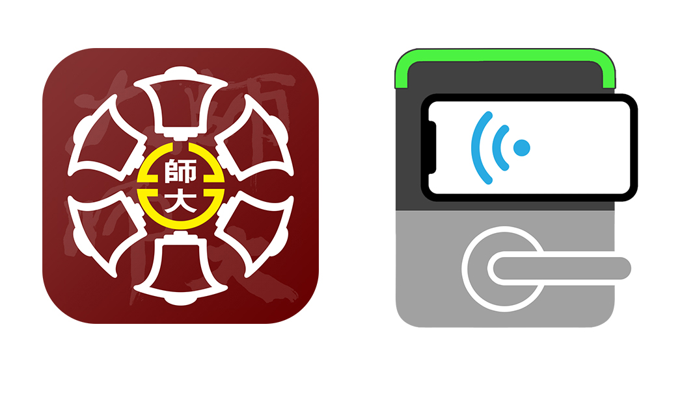
2. 感應門鎖-手機APP
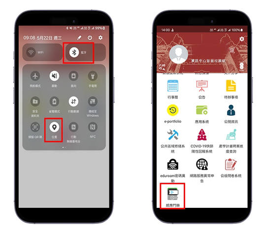
步驟1. 開啟手機的「藍牙」與「定位」功能
步驟2. 登入臺師大APP>>感應門鎖
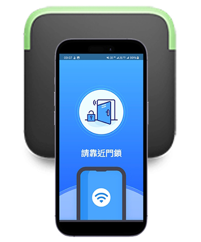
步驟3. 把手機靠近門鎖感應，即可開門解鎖。
手機感應門鎖開門示範影片(門把式門鎖)
手機感應門鎖開門示範影片(讀卡機式門鎖)